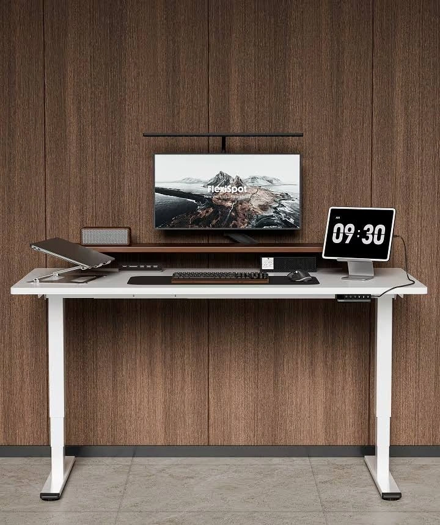
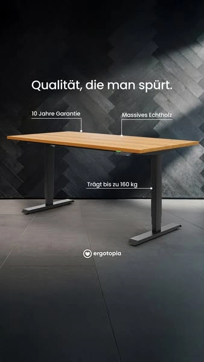

FW-C07 · 深色空间里的白色桌子
评分：91/100，排名8，Top 10 / 第一批。分项：{'product_30': 29, 'need_25': 21, 'reference_20': 18, 'difference_15': 13, 'feasibility_10': 10}。评分是测试潜力，不是效果预测。
产品：Dual Ultra X 白色 140×70 cm。
用户：重视白色家具外观但不喜欢全米色家居的用户。
需求：看清白色桌体在另一种装修风格中的样子。
卖点：白桌白架与中尺寸外形。
机会类型：一：成熟创意的新表现。
参考什么：参考深背景的轮廓反差与定向光，不复制品质认证或承重宣称。
为什么：P6白色在售，外观需求是产品选型推断；不声称审美偏好覆盖整个德国市场。
如何差异化：以靛蓝墙和银色工作灯替代竞品木墙，减少暖木元素；白桌完整露出。
场景：城市公寓的深蓝工作间，侧边金属书架，墙面有一幅单色版画。
构图：低于桌面的前方三分之四全景，桌子约占画面60%；顶部左侧留小标题区，控制器无遮挡。
人物及动作：无人；一台显示器、银色灯、一本合上的灰色笔记本。
渠道：Meta Feed；Google PMax 图片资产。比例：4:5、1:1。德语主题：Weiß, das in dein Setup passt。
资格依据：白桌白架140×70在售变体；双电机；完整尺寸和SKU已记录。
不能添加的宣称：同P3的动态/静态承重冲突；不要沿用旧记忆中的承重数字。
证据边界：有A类实际图片参考；具体原创场景和转化效果尚待测试。图片参考体现视觉方法，不构成竞品效果数据。需求证据：P6；视觉方法有A类参考，风格购买需求为假设。
参考原图

FLEX-GOOG-067FLEX-GOOG-067 · FlexiSpot · Google · 真实广告内的图像组件（非完整广告版式）
原广告来源。详情日期与德国地区已核验。

ERGO-META-2477194332778401ERGO-META-2477194332778401 · Ergotopia · Meta · 广告中的静态图片
原广告来源。德国公开列表中投放中，采集日可见；未公开停止日期。